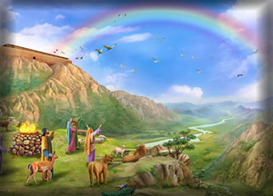

Noah and the Flood: Judgment and Mercy (Genesis 6-9)
"But Noah found favor in the eyes of the Lord." (Genesis 6:8)
By Genesis 6, the world is filled with violence, corruption, and rebellion. Humanity has turned away from its Creator, and the earth groans under the weight of sin. Yet amid the darkness, one man walks with God - Noah. His life becomes a vessel of mercy in a sea of judgment.
Judgment: The Flood
God's decision to send the flood is not impulsive - it is just. The flood is a cleansing act, a reset of creation. But it is also a warning: sin has consequences, and holiness cannot be ignored. The ark becomes both a refuge and a symbol of God's justice.
- Universal judgment: The flood covers the earth.
- Divine instruction: God gives Noah precise plans for salvation.
- Obedient faith: Noah builds, waits, and trusts.
Mercy: The Covenant
After the flood, God makes a covenant with Noah - a promise never to destroy the earth by water again. The rainbow becomes a sign of divine mercy, a reminder that judgment is not the final word. God's heart is toward restoration.
Noah offers a sacrifice, and God responds with blessing. The covenant echoes Eden: be fruitful, multiply, and steward creation. But it also anticipates a greater covenant - one that will be sealed not with a rainbow, but with a cross.
Relevance to Salvation
- God judges sin, but provides a way of escape.
- Faith responds with obedience, even when the outcome is unseen.
- The ark foreshadows Christ - our refuge from judgment.
"By faith Noah, being warned by God... constructed an ark for the saving of his household." (Hebrews 11:7)